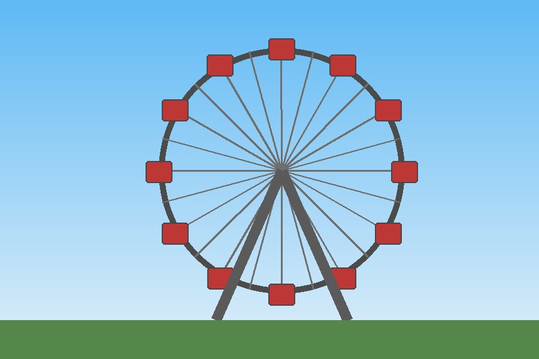

Tagasi kodulehele | Pildikaardi pealeht
Kliki tekstil "Paris, France", päevade ilmamärkidel (THU, FRI, SAT, SUN) või vaateratta ülemisel osal.

Pildi taustal on suur vaateratas. Vaaterattaga saab sõita kõrgele ja vaadata linna ülevalt.